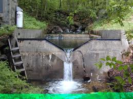
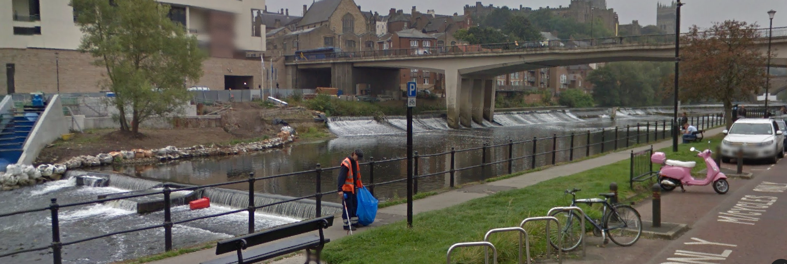
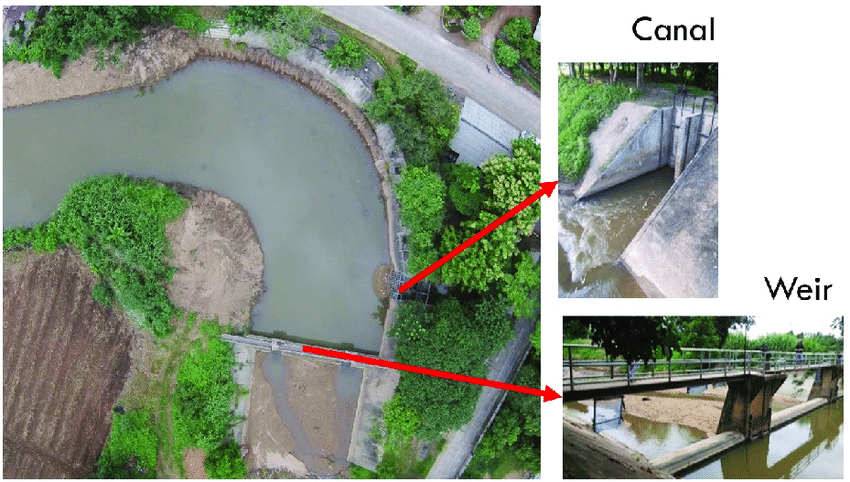
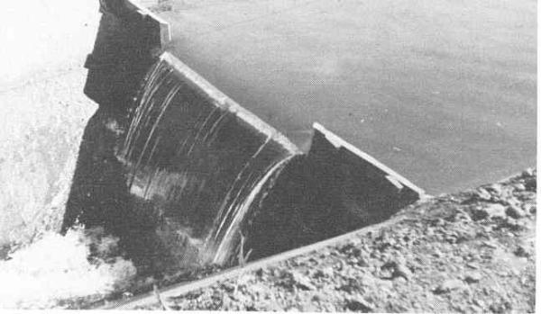
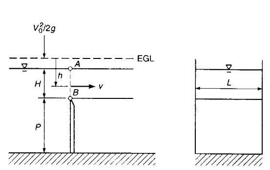
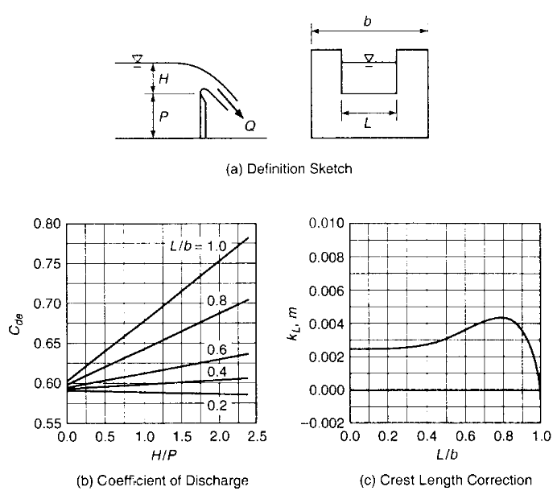

Weirs¶
Used as flow measuring devices and to maintain specific pool elevations in hydraulic systems.
Flow Measurement¶

Stage Control - Water Quality Enhancement¶

Stage Control - Erosion Management¶

Stage Control - Diversion/Extraction¶

Examples¶
Many types of weirs in the textbook are typically employed for flow measurement. Most of the weirs pictured are morphologically the same as a handful of well studied types
Sharp-Crested Rectangular Notch Weir¶

A sketch of a sharp-crested weir (weir plate is thin in the flow direction) is shown below

Assuming no head loss, atmospheric pressure across AB (implies flow over the crest is like a jet, that is \(\Delta p\) is small from top to bottom - the assumption becomes weak when the weir becomes flooded), negligible contraction of the nappe.
Integrating the velocity profile from A to B to obtain a mean section speed in the nappe, and multiplying by the cross section width produces (Eqn 2.39)
Where \(L\) is the width (weir length) of the notch crest perpindicular to flow, and \(H\) is the static head above the crest height (the flow depth of the nappe at the crest).
The weir coefficient \(C_d\) is determined by weir morphology:

These charts are used with an adjusted formula
where
and
\(k_L\) is read from the chart and \(k_H\) is a constant 0.001 m (0.003 ft)
An alternate approach is a formula for \(C_{de}\) (Kindsvater-Carter formula)
\(C_{de} = \beta_1 + \beta_2 \frac{H}{P}\)
where
\(\frac{L}{b}\) |
\(\beta_1\) |
\(\beta_2\) |
|---|---|---|
1.0 |
0.602 |
0.075 |
0.9 |
0.599 |
0.064 |
0.8 |
0.597 |
0.045 |
0.7 |
0.595 |
0.030 |
0.6 |
0.593 |
0.018 |
0.5 |
0.592 |
0.011 |
0.4 |
0.591 |
0.0058 |
0.3 |
0.590 |
0.0020 |
0.2 |
0.589 |
-0.0018 |
0.1 |
0.588 |
-0.0021 |
0.0 |
0.587 |
-0.0023 |